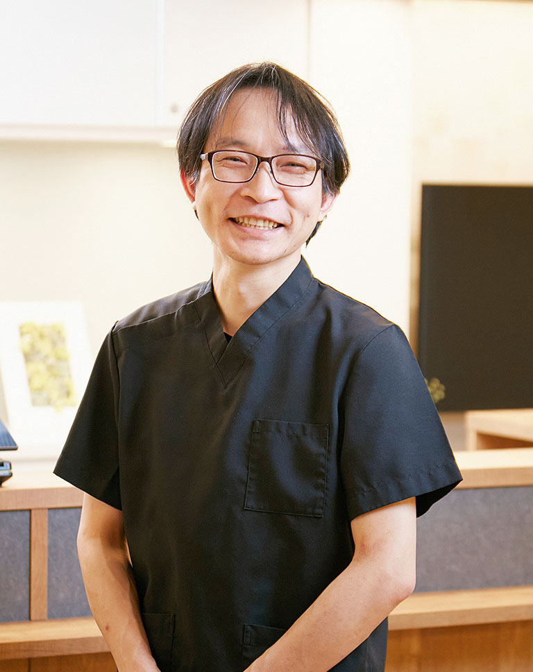

Greeting
ごあいさつ
皆様、初めまして。ベオデンタル本川越クリニックの院長、田草川潤と申します。
川越は歯科大学生の時、大学が近いこともありよく観光に来ていました。弓道をやっていたので「小江戸・川越」の雰囲気が大好きでした。
昔、よく通っていた大好きなこの川越に開業できたことをうれしく思っています。
日頃、お口の中でお悩みの方は数多くいらっしゃると思います。「けど歯医者さんって怖いイメージで通いづらい…。」と歯のこと以外で悩まれている方も多いと思います。
当院では「笑顔で通える歯科医院」「最小限の治療介入」をコンセプトに患者様お一人おひとりのお悩みや不安に寄り添い、丁寧な治療を心がけて行っています。